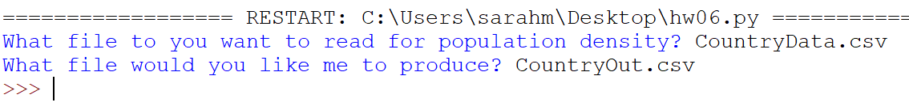
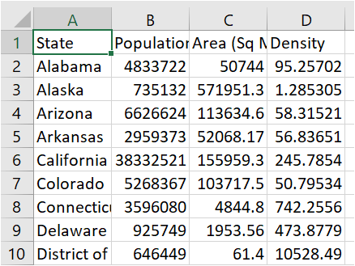
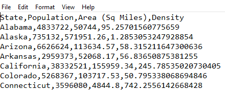

Intro to Computer Science
Homework #6
CSV Files!
Code due by Monday, October 23rd at 11:59:59pm
Late code may be submitted up to two days late for a penalty of 10% per day.
Introduction
My friend is a really big geography buff. He loves statistics about the various states and countries. Recently we were having an interesting discussion about which states were the most and least populous by size. That got us interested in calculating various popluation densities. For this assignment you will write the code to answer this question.
Specifics
In a file called: hw06.py
Create a program that should:
- Ask for two inputs:
- Ask for the name of the input file.
- Ask for the name of the output file that your code will produce.
- Prints:
- Actions:
- Opens the input file
- Opens the output file
- Pulls off the header and adds one more column labeled "Density"
- For each territory provided in the data file you opened:
- extract population and size
- calculate population density (people per square area)
- writes the original data PLUS the population density into the output csv file
- Closes both files
- Data files to use:
- Example run of the program:

Note: This means I need to be able to OPEN whatever file name I want. Do NOT hardcode "StateData.csv" into your open call. Instead, ask for a file name with input (say input_filename), and then open it in your program like this:
fin = open(input_filename,"r")
- Example output using the StateData.csv input file:

- Example output using the StateData.csv input file in a text editor:

Troubleshooting
Question #1: Python can't find the csv file. What's wrong?
- Remember, for this class, I need you to put the files in the same folder as your python program. Double check to make sure they are in the same folder. If you end up moving something around, you might want to close IDLE and restart IDLE to test it out.
Question #2: The autolab won't give me full points because the top line (header) of the state output file is a little different that the top line of the country output file. How do I fix that?
- When you read the header of the input file, you can actually write that header back to the output file with a density column added on. Notice how the headers in the state and country input files are a little different?
Question #3: Something else is wrong, and I'm having a hard time figuring out what that is.
- Hint: You may want to open the csv files with notepad or textedit to make sure things are right (e.g. you have commas where you need them, the data goes on multiple rows, etc.).
Question #4: I don't have Excel (or a spreadsheet reader program). Can I still do this homework?
- Yes, you can still do this homework without a spreadsheet reader program. Here is a link to an explanation video.
Final Submission
Use the program submission system to upload your code.